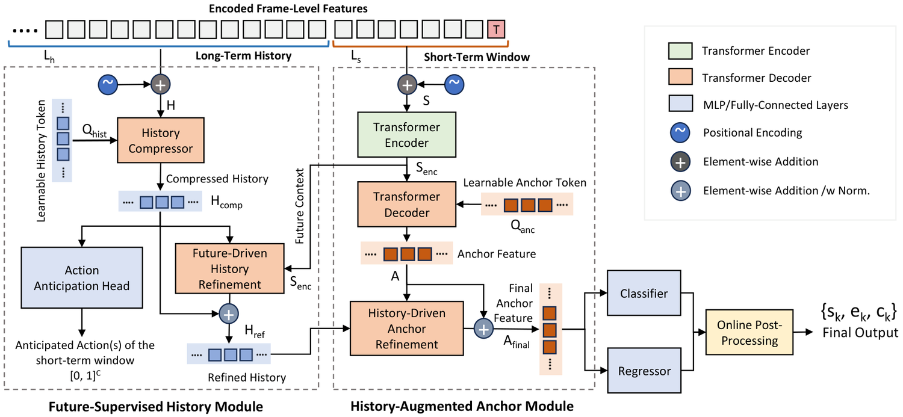

可直接借“可学习 history token 压缩 + 交叉注意力注入 anchor”这套结构，让短窗口 anchor 带上过程先验；代价是历史长度按数据集手调且固定，历史写错后没有任何回退机制。
- 最小可复用件
- 以
L_comp个可学习 history token 为 query、长历史特征为 key/value 的压缩解码器，后接用当前窗口类别弱监督的 anticipation head（权重γ = 0.2）。 - 主要风险
- 历史污染：错误片段经压缩后直接改写 anchor 表征，模块内没有门控、置信度或时间衰减。
- 复现门槛
- 帧级预训练特征（I3D / SlowFast / TSN）与逐帧动作标注；训练时需要当前窗口的类别标签算辅助损失，推理不需要未来帧。
1. 核心摘要
在线时序动作定位（OnTAL）要求每个时刻只凭已见帧输出实例级 proposal，且已提交的实例不能回改。OAT 一类方法把全部判别力压在 8 秒短窗口上：窗口内的运动足以区分“切”与“抓”，却看不到此前取刀、取食材的准备动作，程序性第一视角视频里这种歧义最密集。HAT 在短窗口之外并行维护一段固定长度的连续历史，先用少量可学习 history token 把它压缩，再用“当前窗口内出现了哪些动作类别”这一弱标签训练 anticipation head，迫使压缩器把注意力放到对接下来动作有用的帧上；压缩后的历史经短时上下文精炼，以交叉注意力注入 anchor 特征。
贡献是结构性的：历史成为 anchor 表征的一部分，而不是外挂分类器的额外输入。判定：它是“边界定位”环节里最直接可借的历史注入方案，但它既不决定候选何时开始，也不处理历史写错后的纠正。
2. 事件流水线定位
落在边界定位：输入是已经流过的帧特征，输出是每个时刻每个 anchor 的类别与边界修正量，经在线抑制网络提交实例。对语义确认只是部分相关——类别头给出的是 anchor 级后验，不是“阶段是否切换”的判决；对记忆写入也只提供“历史如何在表征层被使用”，不提供写入门控与淘汰策略。
| 方法 | 历史用法 | 监督是否用未来 | 提交粒度 |
|---|---|---|---|
| OAT | 不用历史，只编码当前短窗口 | 否 | 实例级：每帧 M 个 anchor 经 NMS 与在线抑制网络提交，提交后不可改 |
| MATR | 显式记忆库，按 flag 写入、FIFO 淘汰，可回溯超出窗口的起点 | 否，写入依据是当前片段与实例是否重叠 | 实例级：需等动作终点可见才提交 |
| HAT | 固定长度连续历史（EGTEA/EK-100 上 48 个特征，约 24 秒），压成 L_comp 个 token 后注入 anchor | 是，但只监督当前窗口的动作类别，且仅训练期使用 | 实例级：沿用 OAT 的每帧 NMS 与在线抑制，提交后不可改 |
3. 问题与动机
失效模式很具体：程序性第一视角里，当前窗口的视觉证据经常不足以唯一确定动作。切番茄中段与切黄瓜中段几乎同构，区别在之前取了什么、放在哪里；手部遮挡或动作出画又会让当前帧接近背景。OAT 的短窗口在起点滑出后只剩“正在切”这一局部证据，无法判断这是第几步、属于哪个任务阶段，于是同一动作在不同上下文里被反复提交成碎片。
把长历史直接送进自注意力同样不行，有两个代价。一是复杂度随历史长度平方增长，24 秒在 2 特征/秒下就是 48 个 token，与 anchor 解码器叠加后训练与推理都变重。二是无关帧（走动、翻找、等待）被平均进来，关键的准备动作反而被稀释。更根本的是缺少训练信号：没有东西告诉压缩器“哪段历史对接下来的动作有用”，它只能学无损压缩，学不到任务相关的选择。
数据侧的对比解释了作者为什么把 PREGO 与非 PREGO 分开报告：EGTEA 每段视频平均 180 个实例、15.6 个动作类别，THUMOS 只有 15.5 个实例、1.2 个类别。单类体育视频里局部运动足以判别，历史自然带不来多少增益；步骤密集的厨房任务才真正需要过程先验。
4. 方法拆解

Figure 2，HAT 总体结构：future-supervised history module（压缩器 + 预判头 + 未来驱动精炼）与 history-augmented anchor module。原图 PDF 见 figures/fig2_architecture.pdf，由作者 LaTeX 源码 Figure 2 渲染。
4.1 输入与时间表征
输入是帧级预训练特征：EGTEA 用 Kinetics 预训练 I3D，原帧率 24 FPS、stride 12，即每秒 2 个特征；EK-100 用 SlowFast，THUMOS 用双流 TSN，MUSES 用 I3D。特征经线性层投到 D = 1024，加位置编码后组成长度 L_q = L_h + L_s 的输入队列，再切成两段：右端紧贴当前时刻的短窗口 S（长度 L_s）与它之前的连续历史 H（长度 L_h）。EGTEA/EK-100 取 L_h = 48、L_s = 16，对应 24 秒历史与 8 秒短窗口；THUMOS 取 256/64，MUSES 取 300/150。
两点对实现有影响。历史是紧邻短窗口的连续片段，不做稀疏采样、不跨越空档，所以模型看到的是最近 24 秒的全部内容，而不是整段视频的关键帧摘要。短窗口长度同时决定 anchor 可表达的最大时长：EGTEA/EK-100 的 6 个 anchor 为 2/4/6/8/12/16 个特征，最长 anchor 正好等于 L_s。
4.2 关键机制
压缩。长度 L_comp ≪ L_h 的可学习 history token 作 query，历史特征 H 作 key/value，经 N_c = 5 个解码块得到 H_comp。压缩把读取历史的代价从随 L_h 平方增长变成随 L_comp × L_h 线性增长，也让后续与 anchor 的交互只在少量 token 上做。
未来监督。监督目标不是下一片段的特征回归，也不是帧级标签，而是当前滑动窗口 S 内出现的动作类别——对历史编码器而言这就是“未来”。粒度是窗口级弱监督，输出一个 C 维类别向量；结构为线性层降维到 D/4、展平、两层全连接（ReLU 与 sigmoid）。梯度只经压缩器回传，压缩器因此必须保留能预测“接下来发生什么”的帧，这是它区别于普通池化压缩的关键。
与 OadTR 的分界。OadTR 也做未来预测，但那是解码端一个独立的辅助预测头，输出未来若干步的预测后不再参与当前检测表征；HAT 的 anticipation head 同样是分类头，梯度却回传到历史压缩器，改写的是送进分类器的 anchor 表征本身。
精炼与注入。压缩历史作 query、短窗口编码 S_enc 作 key/value，经 N_r = 2 个解码块，用当前上下文校准历史注意力，再加残差与归一化：H_ref = Norm(d(H_comp, S_enc) + H_comp)。anchor 侧沿用 OAT：S 经编码器得到 S_enc，再由带可学习 anchor query 的解码器产生 A。历史进入 anchor 的方式不是拼接，而是把 A 作 query、H_ref 作 key/value 再做一次交叉注意力：A_final = Norm(d(A, H_ref) + A)。作者把这套融合与替代方案做了对比（Table 7，EGTEA split-1 平均 mAP）：平均池化 19.3、拼接 19.5、LSTR 的 Temporal NLB 20.3、Transformer 解码器 20.8。
4.3 输出与在线边界
预测头接在 A_final 上，同时给出类别、目标终点相对 anchor 终点的偏移、以及目标时长与 anchor 时长的比值。每帧产生 M 个 proposal，过滤背景后做单帧 NMS，再送入在线抑制网络，按置信度历史决定是否写入最终实例集。整个流程是因果的：所有输入特征满足 i ≤ t，S 的右端就是当前时刻。
“未来”只在训练目标里出现，而且只是相对历史编码器的未来——即仍然落在 t 之内的当前窗口。推理时 anticipation head 的输出被直接丢弃，模型只用训练好的压缩器与精炼器，因此在线约束成立，不存在读取未来帧的问题。这也意味着该模块的收益完全依赖训练期标签：窗口类别标签缺失时，辅助损失无从计算。
训练目标为 L = αL_c + β(L_o + L_l) + γL_a，取 α = β = 1、γ = 0.2；分类项用自适应焦点损失，回归项为终点偏移与长度的 L1 损失。论文报告在 RTX 4090 上 147 FPS，按 OnTAL 惯例这是模型前向速度，部署时视觉编码器的开销需另算。
5. 证据与实验
Table 1 在 PREGO 上报告 tIoU 0.1–0.5 的 mAP：EGTEA 上 OAT 19.6、HAT 21.5；EK-100 上 14.2 升到 15.3。Table 2 在非 PREGO 上报告 0.3–0.7：THUMOS 44.6 升到 44.8，MUSES 9.8（OAT 的重建结果，原文标星）升到 10.8。方向与主张一致——过程性越强、每段视频类别越多，收益越大；但 THUMOS 上 0.2 的提升不足以支撑“通用更优”的说法。
机制证据来自 Table 3（EGTEA split-1，平均 mAP）：完整模块 20.8，去掉 anticipation head 19.8，去掉未来驱动精炼 20.0，两者都去掉 19.2，整个 history module 去掉 18.9。单个预判头的贡献大于精炼模块，说明“用未来监督校准压缩器”比“再用当前上下文精炼一次”更关键。Table 4 把历史处理换成 OAD 领域的 LSTR（19.5）与 GateHUB（19.9），FSHM 为 20.8；Table 6 扫历史长度，0/8/16/24/32/40 秒对应 18.9/19.2/20.2/20.8/20.2/20.6，24 秒最好但并不单调。Table 8 的 AEDT：OAT 平均 −1.01 秒，HAT −0.97 秒，两者都在动作结束前约 1 秒检出，加历史没有牺牲提前量。
需要提醒的一处不一致：Table 1 与 Table 3 都报 EGTEA，数值却是 21.5 与 20.8。Table 3 明确写 split-1，Table 1 的划分说明未在正文中给出，本页不在这两个数字之间做换算，也不把不同协议的 mAP 汇成一个排名。
6. 优点、局限与 VLA 适配
可迁移
“少量可学习 token 压缩长历史”与“用接下来会发生什么的弱标签校准压缩器”可以整体搬到机器人策略里：把 24 秒固定窗口换成固定数量的已完成子任务 token，压缩器输出直接作为策略或阶段分类器的条件。交叉注意力注入 anchor 的做法也比拼接更容易控制历史的影响强度。
不成立的前提
OnTAL 假设动作是闭集、步骤顺序清晰、历史等间隔采样、每帧都要输出 proposal。机器人历史是“已完成子任务 + 物体状态”，事件稀疏且不等长；147 FPS 不含视觉编码器；模块没有任何写入可靠性判断。步骤顺序被打断（返工、跳步）时，固定 24 秒窗口里可能全是无关片段。
在机器人任务里，HAT 的连续历史对应的是已完成子任务序列：取刀、取番茄、放到砧板，每一步留下的是物体状态与位姿变化，而不是 48 个等间隔帧特征。映射时要注意粒度——视频每秒 2 个特征，控制回路常在 10–30 Hz，照抄 48 步只有 2–5 秒；应按“最多回看多少个已完成子任务”设 L_h，把每个子任务压成一到几个 token，让 L_comp 与任务步数同阶。
错误历史的污染路径很直接：压缩器没有写入门控，也没有置信度或时间衰减。一旦上游把“已拿起刀”误判并写入缓冲，这类片段会和其他历史一起被压进 H_comp，再作为 key/value 参与 anchor 的交叉注意力；当前 anchor 若正处在“切”与“抓”的边界，历史证据会把分类与边界回归一起推向错误的一侧，而且错误会随窗口滑动持续存在。这与 MATR 的 flag 门控加 FIFO 形成对照：HAT 规定“读多长”，不规定“信多少”。最小改造是在写入侧加置信度阈值与淘汰规则，在读取侧给历史 token 加可学习的时间衰减或可靠性权重。
7. 落地清单
- 按秒设定历史长度：以 24 秒为初值，复现 Table 6 的长度扫描，记录收益饱和点，再换算成机器人控制步数。
- 用
L_comp个可学习 history token 压缩历史，不要直接把长历史拼接进短窗口输入。 - 把 anticipation head 的监督换成“当前窗口内技能类别”，从
γ = 0.2起步，并确认推理时丢弃该头。 - 给历史写入加置信度门控与 FIFO 淘汰，先以 MATR 的 flag 规则作基线，再比较错误历史被放大的频率。
- 按 Table 3 的顺序做消融（去预判头、去精炼、去整个模块），确认增益来自监督信号而非参数量。
来源：arXiv:2408.06437（v1，2024-08-12，含补充材料 Table 6–8）；ECCV 2024 论文（ECVA papers 03153）；官方代码 https://github.com/sakibreza/ECCV24-HAT 。数据集与实现细节见正文 4.1–4.2 节，全部数值取自 Table 1、2、3、4、6、7、8。
图像说明：Figure 2 由作者 LaTeX 源码渲染为 PNG，原始 PDF 为 figures/fig2_architecture.pdf。
相关页面：OAT · 滑窗 anchor · MATR · 记忆库 · OadTR · 未来预测 · 返回总站